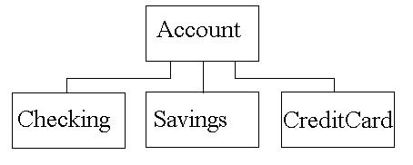

Exam Code
For the exam we will implement a classic Inheritance hierarchy. A simple console
based interface is all that is needed. Build your classes first, each in their own
.h and .cpp files, then test them with the simple main method provided below.
Phase 1 :
Here is the following set of classes you will implement and their inheritance relationship:

Account
The generic BASE class Account will serve as the parent class to Checking, Savings
and CreditCard.
Variables (private):
- name - Name of account owner, a string
- taxID - social security number, a long
- balance - an amount in dollars, a double
Variables (protected):
- numdeposits - number of deposits, an int
- numwithdraws - number of withdrawals, an int
Methods:
- SetName, SetTaxID, Setbalance() assigns a new value for each with error checking
- GetName, GetTaxID, Getbalance() returns a value for each variable.
- MakeDeposit( double amount ) - adjust the balance and put it in the deposit array
- A constructor with no parameters and one with name, taxID and balance parameters
- display() a method to display the name, taxID and balance
Checking
A specific DERIVED class that represents a bank checking account. It must inherit
Account.
Variables (private):
- last10checks - an int array of size 10. The last 10 check numbers.
Methods:
- WriteCheck( int checknum, double amount ) - adjust the balance and list it as a withdraw
in the base class
- A constructor with no parameters and one with name, taxID and balance parameters
- display() - display the accounts check register (number and amount) and deposit record
Savings
A specific DERIVED class that represents a bank savings account. It must inherit Account.
Methods:
- DoWithdraw( double amount) - adjust the balance and list it as a withdraw in the base
class
- A constructor with no parameters and one with name, taxID and balance parameters
- display() - display the accounts withdrawal and deposit record
CreditCard
A specific DERIVED class that represents a credit card account. It must inherit Account.
Variables:
- cardnumber - a long
- last10charges - a string array of size 10. The last 10 names of the charges.
Methods:
- DoCharge( string name, double amount ) - adjust the balance and list it as a withdraw
in the base class
- MakePayment( double amount) - adjust the balance and list it as a DEPOSIT in the base
class
- A constructor with no parameters and one with name, taxID and balance parameters
- display() - display the accounts charges ( name and amount ) and deposit record
Note: all display() methods should use cout to output text to the console.
Write a main() Function
Write a main that creates 3 objects, starts each with a balance of $100. Create a
loop that displays the following menu each time through the loop. Make sure the balance
is updated each time AND you use the objects to perform the transactions.
Checking balance: $100 Savings balance: $100 Credit Card balance: $100
1. Savings Deposit
2. Savings withdrawal
3. Checking Deposit
4. Write A Check
5. Credit Card Payment
6. Make A Charge
7. Display Savings
8. Display Checking
9. Display Credit Card
0. Exit